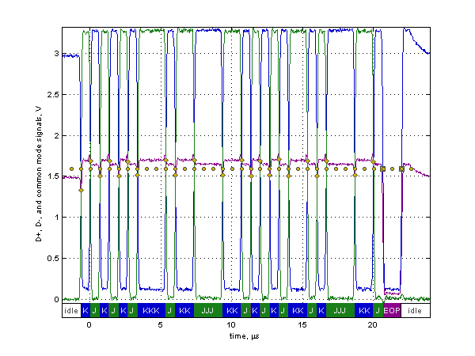
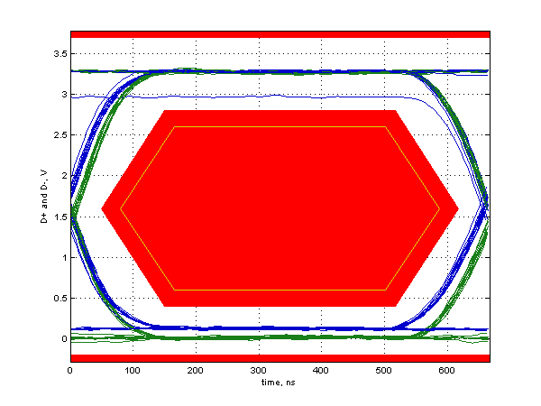

Low Speed Signal Quality Test
Results for low_speed_host0_port0
For details on test setup, methodology, and performance criteria, please consult the signal quality test description at the USB-IF Compliance Program web page.
Required Tests
- Overall result: pass!
- Signal eye:
eye passes
- EOP width: 1.32 ms
EOP width passes
- Measured signaling rate: 1.4994 MHz
signal rate passes
- Crossover voltage range: 1.33 V to 1.70 V, mean crossover 1.59 V
(first crossover at 1.33 V, 21 other differential crossovers checked)
crossover voltages pass
- Consecutive jitter range: -6.840 ns to 8.079 ns, RMS jitter 4.236 ns
Paired JK jitter range: -0.077 ns to 1.711 ns, RMS jitter 1.114 ns
Paired KJ jitter range: 0.045 ns to 1.815 ns, RMS jitter 0.949 ns
jitter passes
Additional Information
- Rising Edge Rate: 17.18 V/us (Equivalent risetime = 153.63 ns)
(minimum 8.80 V/us, maximum 35.20 V/us)
- Falling Edge Rate: 18.33 V/us (Equivalent risetime = 144.01 ns)
(minimum 8.80 V/us, maximum 35.20 V/us)
- Edge Rate Match: 6.26% (limit +/-20%)
Signal Data and Eye


Tracking Information
- Analysis call: usbsigcheck('D:\A9125MP B\USB\Low speed\low_speed_host0_port0.tsv', 'lsne', 6)
- Testing script version: 2.22.03